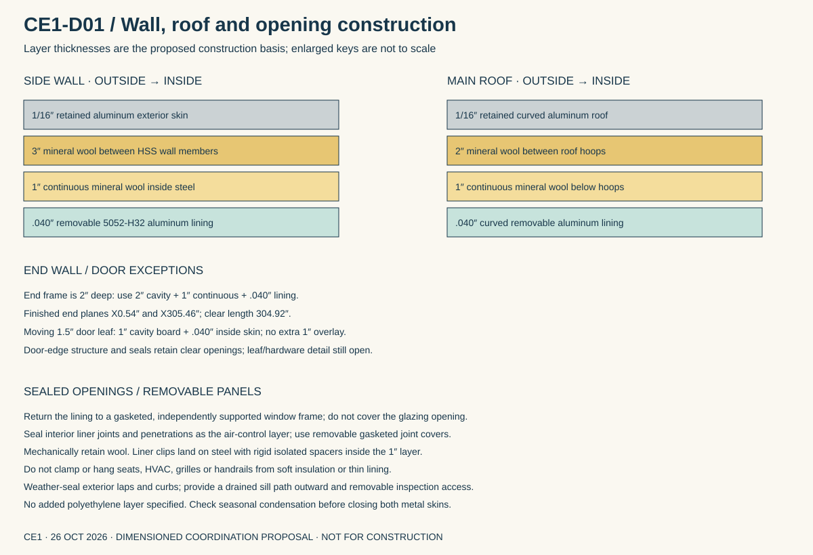
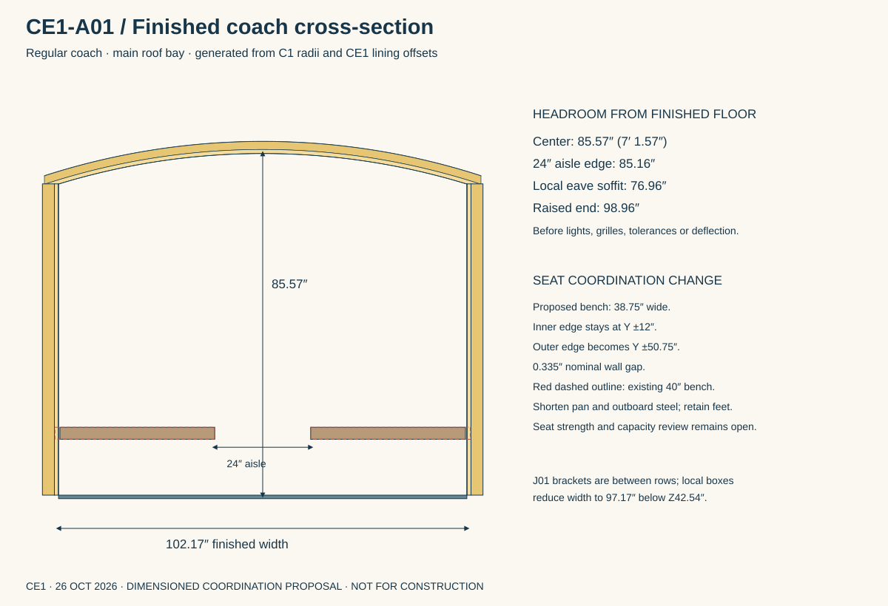
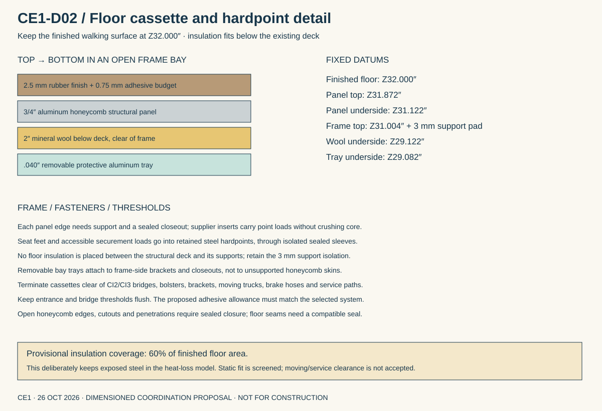

CE1 · COACH ENCLOSURE · 26 OCTOBER 2026
Build the enclosure into the dimensions.
A defined wall, roof and floor proposal for the enclosed coaches: mineral-wool insulation, removable aluminum lining and an insulated floor that keeps the existing boarding height. This sets a construction basis for the next headroom and HVAC review.
These are proposed finished dimensions, not an approved coach build. The sections below add the missing enclosure detail; the retained whole-coach CAD still contains the earlier bare shell and 40″ benches.
Construction from outside to inside
| Assembly | Proposed layers | Total / consequence |
|---|---|---|
| Side walls | 1/16″ aluminum exterior • 3″ cavity mineral wool • 1″ continuous mineral wool • .040″ aluminum lining | 4.1025″ from exterior face to finished interior. Adds 1.040″ inside the steel. |
| Curved roof | 1/16″ aluminum exterior • 2″ cavity mineral wool • 1″ continuous mineral wool • .040″ aluminum lining | 3.1025″ radial build; continuous layer follows the roof curve. |
| End walls | Retained exterior • 2″ cavity mineral wool • 1″ continuous layer • .040″ lining | End framing is shallower than the side posts. Keep doorway returns outside clear openings. |
| Door leaves | Retained 1.5″ leaf • 1″ cavity mineral wool • .040″ interior lining | No continuous 1″ overlay across moving leaves. Seals and hardware remain to detail. |
| Floor | 2.5 mm rubber + adhesive budget • 3/4″ aluminum honeycomb deck • 2″ wool in clear bays • .040″ protective trays | Deck stays at the existing datum; insulation is discontinuous around steel and moving/service equipment. |
Use ROCKWOOL Rockboard 40 as the insulation candidate and .040″ 5052-H32 aluminum for removable interior panels. A painted lining provides the finished interior surface; the exterior’s four retained color references are unchanged. The wool must be mechanically retained and fully enclosed. No exposed insulation faces the passengers or ventilation air path.
Mount the lining on rigid, isolated clips or spacers within the 1″ continuous layer. Soft mineral wool carries no mounting load. Seats, mini-splits, handrails and roof fans attach to the steel structure through separately designed hardpoints. Any added furring depth requires a new headroom calculation.

The wall lining changes the benches
The current 40″ benches reach Y±52″. The new wall surface is at Y±51.085″, producing a 0.915″ overlap. The proposed correction keeps the 24″ aisle and the existing feet, but shortens each bench’s outer steel, pan and pad to 38.75″ wide. That leaves a 0.335″ nominal wall gap. Seat strength, comfort and actual passenger capacity must be checked with this revision.

| Location | Nominal finished clearance | What it means |
|---|---|---|
| Main roof center | 85.57″ | Before fixtures and tolerances. |
| Edge of actual 24″ aisle | 85.16″ | Use the actual aisle; the 32″ regular end door is a different dimension. |
| Local eave soffit | 76.96″ | Low edge above seats; not standing aisle headroom. |
| Raised end roof | 98.96″ | Preserves the above-door mini-split investigation. |
| Finished body length | 304.92″ | End-wall inner faces at X0.54″ /305.46″. |
| Local floor bracket boxes | 97.17″ clear between boxes | J01 pockets are between seat rows and extend to Z42.54″; no accepted ADA route check. |
At a raised end, a 12-3/16″ indoor unit with a 4″ top-clearance reservation would have its bottom about82.77″ above the floor. That leaves only 2.77″ above an 80″ door before trim and supports. This supports continued mini-split packaging; it does not establish a final model, air throw or installation clearance.
The accessible coach needs its own finished-shell check: 36″ boarding route, 78″ side-door height, offset end doors, folded seats, wheelchair turning and securement. The C3.1 pin-withdrawal envelope has only 1.085″ to the proposed wall; hand/tool access remains unresolved. Do not apply the regular bench change to the ADA seats automatically.
Keep insulation below the floor
The candidate deck is a 3/4″ Plascore AA3.6-80 aluminum honeycomb panel, with 2.5 mm Altro Transflor Motus rubber flooring. A 0.75 mm adhesive/leveling budget completes the existing 3.25 mm finish space. The selected adhesive system must fit that budget; no raised threshold is accepted by this proposal.

Floor insulation cannot run through the frame. A static projection check leaves 61.85% clear after provisional gaps; use60% coverage for this study, with 50% and 25% sensitivity cases. The cassette layout still needs moving-truck, brake-hose, debris, drainage and service clearance checks. Honeycomb edges need sealed closeouts, and panel joints and hardpoints need supported load paths.
The floor panel’s catalog coupon properties do not establish passenger-floor or wheelchair point-load capacity. Confirm actual support spans, deflection, local crushing, inserts and adhesives before ordering. The insulation is not a structural core or support pad.
Water, air and service access
Make the removable interior lining a sealed air-control layer with gasketed seams and sealed penetrations. Weather-seal the exterior, drain window sills outward, isolate dissimilar metals and provide removable access at roof penetrations, drains, door hardware and frame connections. Assemble dry and check seasonal condensation before closing two metal skins; no added interior polyethylene layer is specified.
Roof fans need flashed curbs and steel-supported mounts. Mini-split condensate drains require continuous fall, insulation where condensation can occur, accessible traps if required by the manufacturer, and protected discharge away from boarding surfaces. Their exact routes remain open.
What this changes for HVAC
The earlier generic opaque U=1.5 assumption is replaced by assembly-based screening, including steel and uninsulated floor paths. Whole-wall performance is lower than the insulation’s advertised R-value. Window construction, edge losses and attachment bridges still matter.
Current direction: retain mini-splits and develop compact powered roof intake and powered exhaust. The earlier CL3 rear heat-recovery cabinet does not fit the user’s preferred arrangement and is superseded. This study takeszero heat-recovery credit. Airflow and fan selection remain open.
| Regular coach • 300 CFM study | Earlier U on same geometry | CE1 assembly screen |
|---|---|---|
| 95°F evening | 34,270 BTU/h | 33,841 BTU/h |
| 95°F sun | 46,865 BTU/h | 44,788 BTU/h |
| 110°F sun | 58,265 BTU/h | 55,866 BTU/h |
| 20°F occupied heating | 20,819 BTU/h | 19,923 BTU/h |
37 people as a heat-load allowance; not approved occupancy. Dry cooling includes occupant moisture, and 15% cooling allowance. Winter is occupied steady state, not warm-up. These are regular-coach screening results. ADA construction and final outdoor-air requirements are not resolved.
The proposed enclosure adds approximately759 kg (1673 lb) per regular coach over the incomplete C1 mass model, including replacement deck delta, floor finish, fixings reserve and 10% quantity allowance. This is a material budget, not a complete weighed coach or an accepted suspension load.
Eight mini-splits and the 35 kW generator remain candidates. Finalize glazing, floor support and underside fit, ADA clearances, ventilation flow and actual high/low-ambient HVAC inputs before selecting equipment. Inspect assumptions, sensitivities and the mass breakdown →